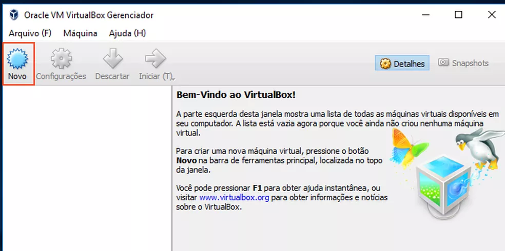
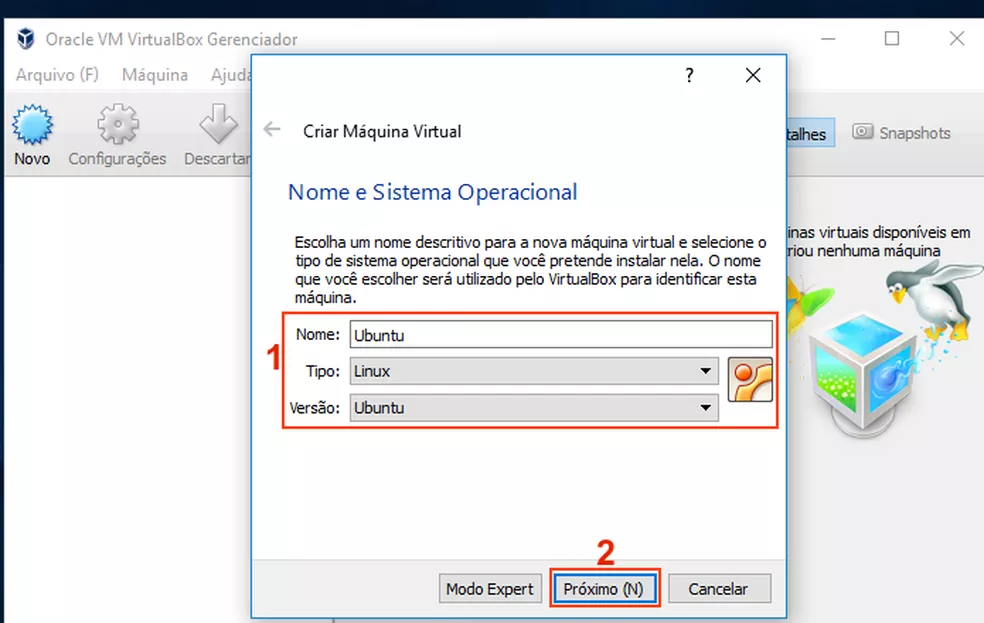
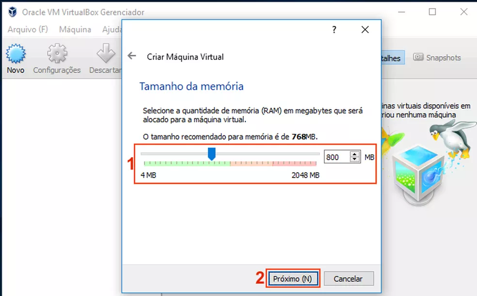
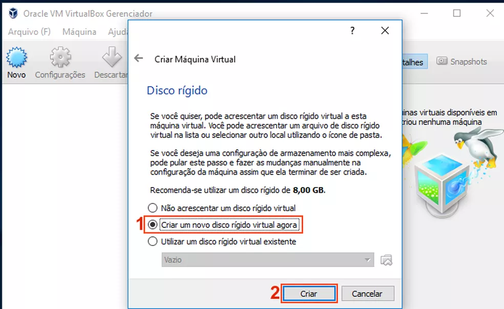
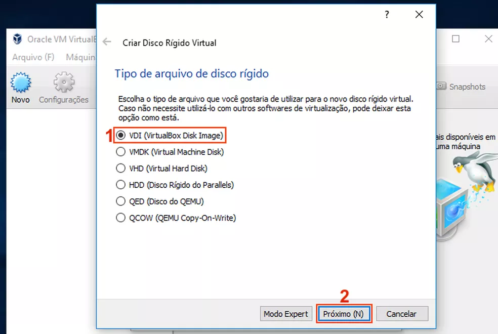
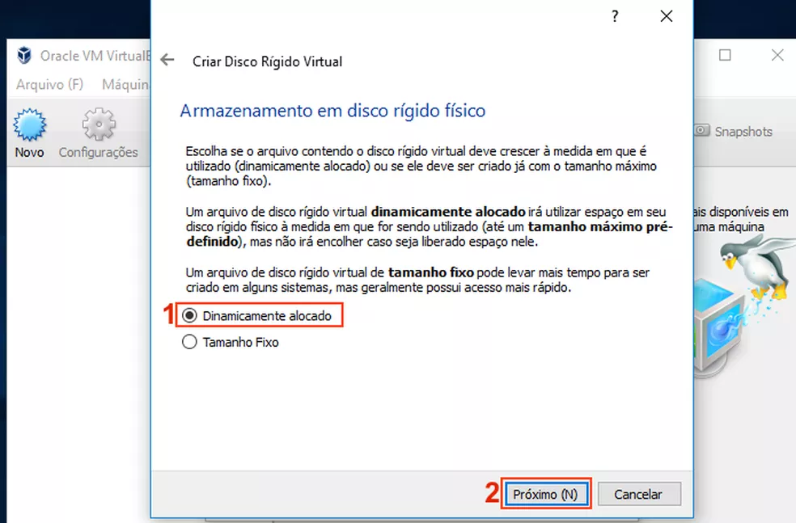
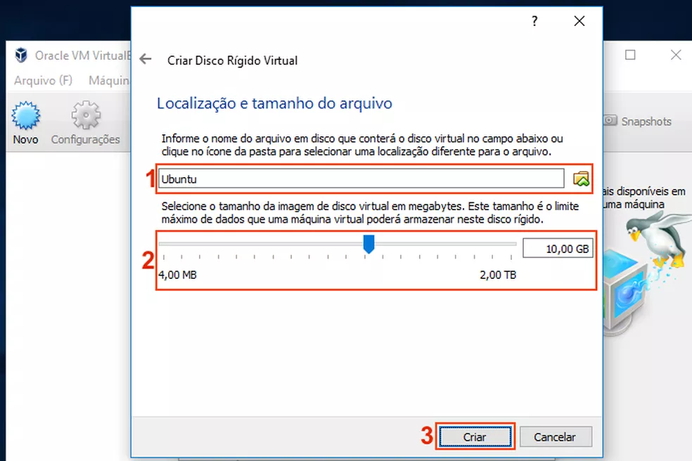
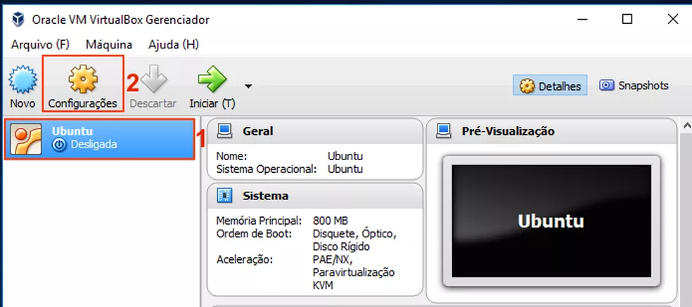
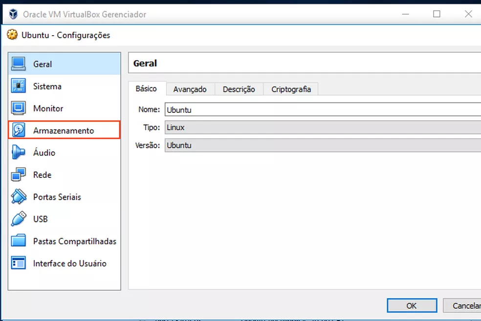
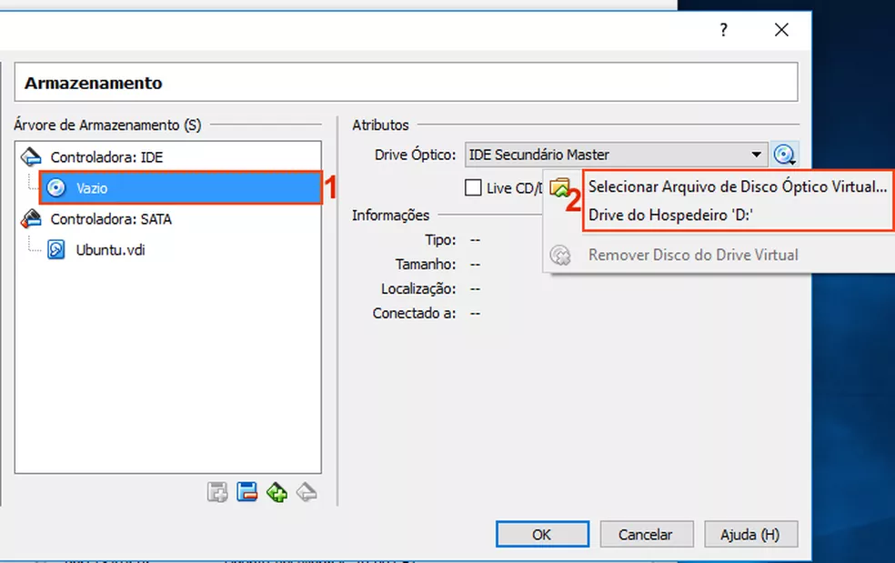

1- Entre no link a seguir e baixe o virtual box: https://www.virtualbox.org/wiki/Downloads Este link é seguro já que é o site da empresa em questão. 2- Entre no link a seguir e baixe a ISO do Ubuntu: https://releases.ubuntu.com/18.04/ Somente com esta ISO você poderá Utilizar o SO Ubuntu pelo Virtual box.
Como criar uma máquina virtual Ubuntu do zero:
1- Execute o VirtualBox. Na tela inicial do programa, clique no botão “Novo”;
2- Na primeira tela do assistente de criação de máquina virtual, digite um nome para a nova máquina. Depois, selecione “Linux” no campo “Tipo”. Em “Versão”, escolha o sistema operacional, neste caso, “Ubuntu”. Clique no botão “Próximo”;
3- Na próxima tela, escolha a quantidade de memória a ser usada pela máquina virtual e então clique no botão “Próximo”;
4- Em “Disco rígido”, marque a opção “Criar um novo disco rígido virtual agora”. Clique no botão “Próximo”;
5- Na tela “Tipo de arquivo de disco rígido”, marque a opção “VDI (VirtualBox Disk Image)” e clique no botão “Próximo”;
6- Em “Armazenamento em disco rígido físico”, marque a opção “Dinamicamente alocado”, com isso, o arquivo do disco ocupará pouco espaço e crescerá a media que for necessário. Clique no botão “Próximo”;
7- Já em “Localização e tamanho de arquivo”, digite o nome do arquivo a ser criado e em seguida, selecione o tamanho máximo desse arquivo. Para confirmar tudo e criar o disco, clique no botão “Criar”;
8- De volta a janela principal do VirtualBox, clique na nova máquina virtual criada e depois no botão “Configurações”;
8- De volta a janela principal do VirtualBox, clique na nova máquina virtual criada e depois no botão “Configurações”; 
9- Em “Configurações”, clique no item “Armazenamento”;
9- Em “Configurações”, clique no item “Armazenamento”; 10- Dentro de “Armazenamento”, Clique no item “Vazio” que fica abaixo da controladora de disco ótico (ícone de CD/DVD). Feito isso, clique na seta ao lado do campo “Drive Óptico”. No menu que aparece, aperte na opção “Drive de Hospedeiro” para usar a unidade física de CD/DVD. Se for usar uma imagem ISO, clique na opção “Selecionar Arquivo de Disco Óptico Virtual…”;
11- Se você clicou na opção “Selecionar Arquivo de Disco Óptico Virtual…”, será exibida uma tela onde você deverá informar onde está a imagem ISO, selecionar e então clicar no botão “Abrir”; 12- Finalmente, clique na máquina virtual e depois no botão “Iniciar”.